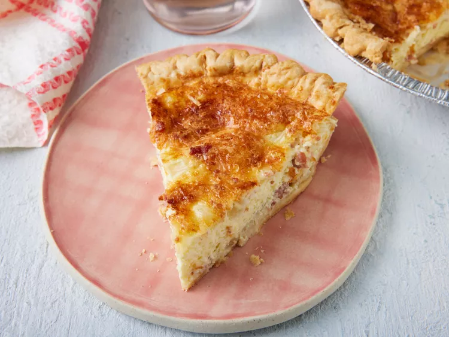

Back to all recipes.
bacon and cheese quiche

Ingredients
- 1 (9 inch) deep dish frozen pie crust
- 1 (3 ounce) can bacon bits
- ½ cup chopped onion
- 5 ounces shredded Swiss cheese
- 3 ounces grated Parmesan cheese
- 4 eggs, lightly beaten
- 1 cup half-and-half cream
Steps
- Preheat the oven to 400 degrees F (200 degrees C).
- Place unthawed pie crust in a pie pan on a baking sheet. Mix bacon, chopped onion, and both cheeses in a medium bowl. Pour this mixture into the crust.
- Mix eggs and half and half in a bowl until blended; pour the egg mixture over the cheese mixture.
- Bake in preheated oven for 15 minutes. Reduce heat to 350 degrees F (175 degrees C) and bake until the top of the quiche begins to turn golden brown, an additional 35 minutes.